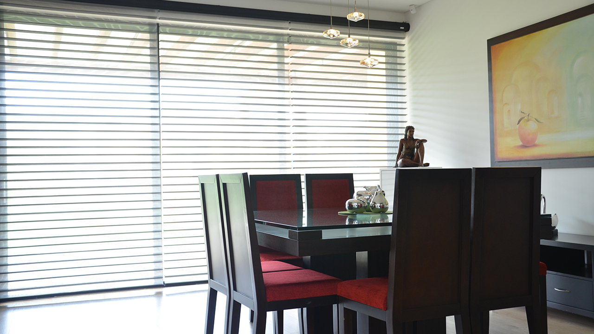
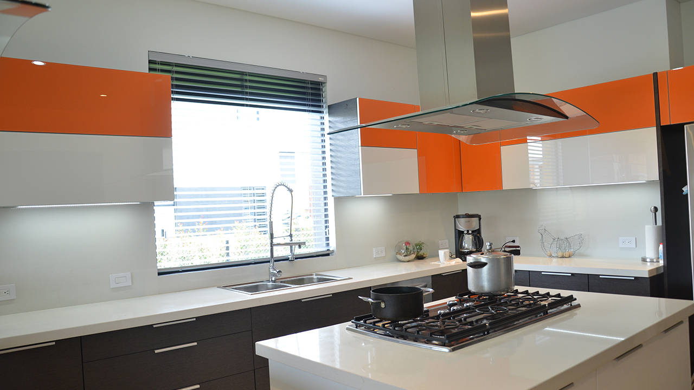
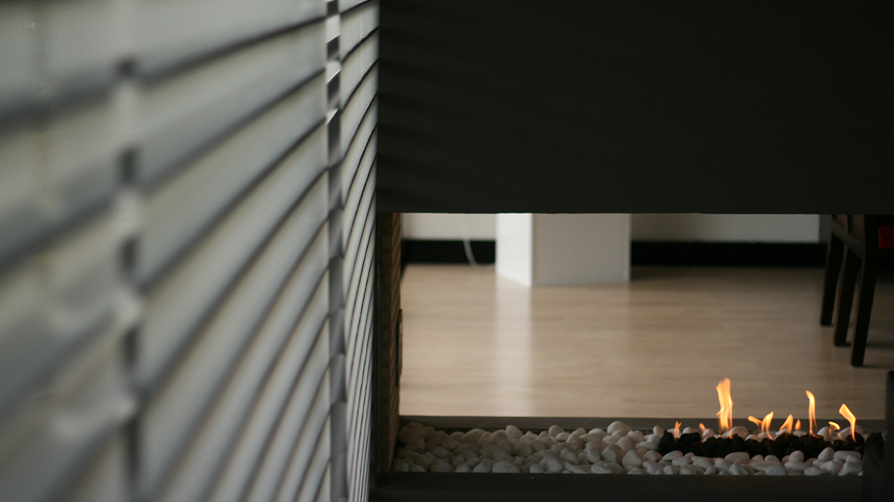
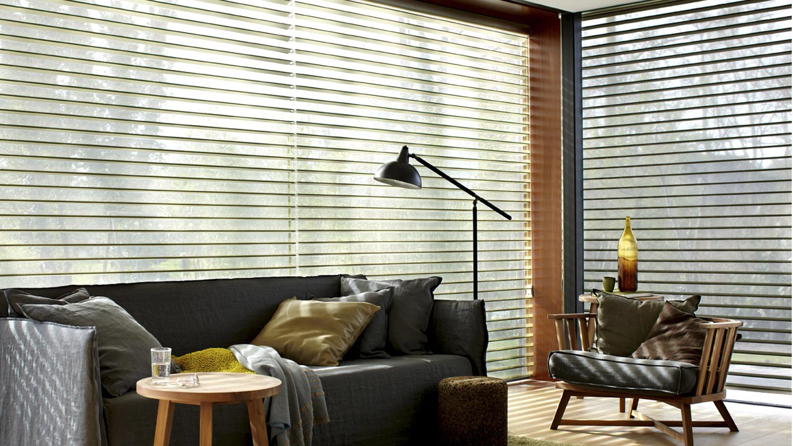
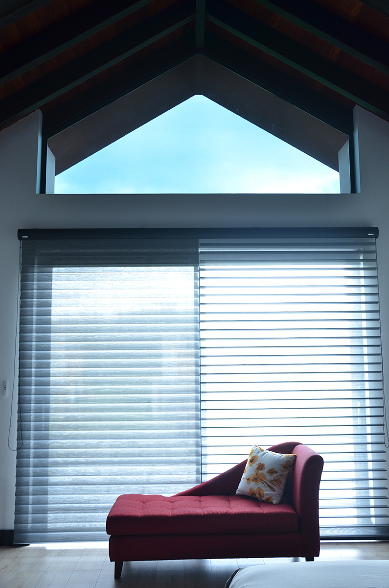
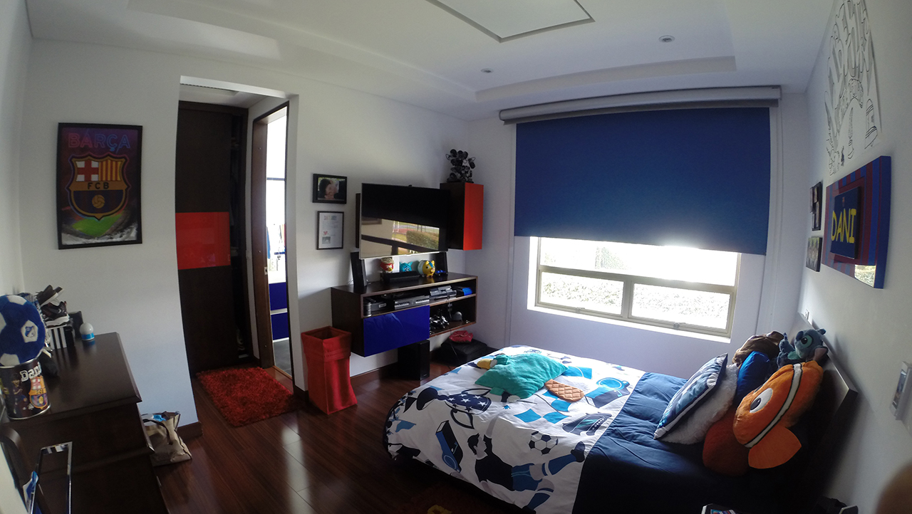
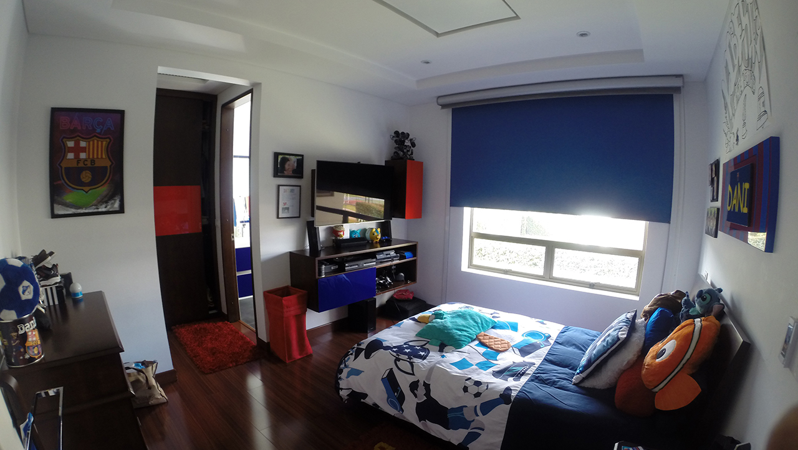
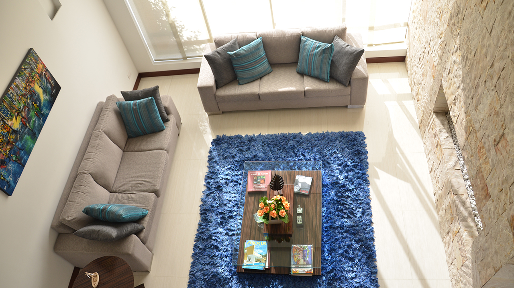
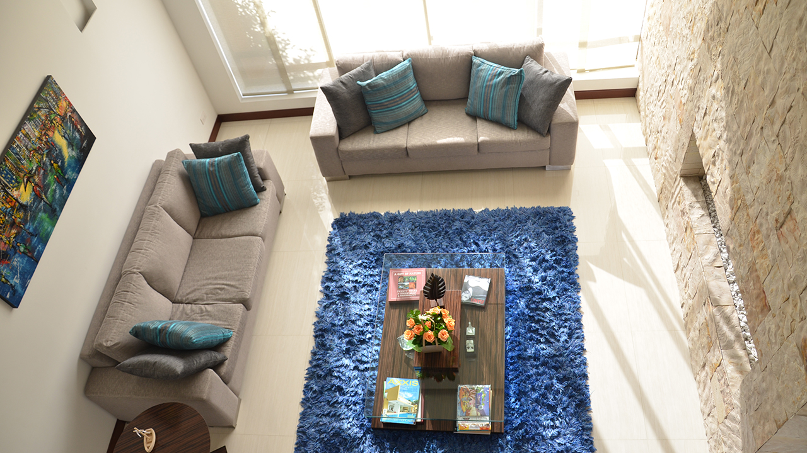

- Cortinas enrollables / Motorizadas
- sheer Elegance
Actualmente el modelo de cortina enrollable más comercializado debido a su facilidad de uso y estilo moderno. La tela tiene franjas horizontales transparentes y opacas intercaladas que permite controlar el paso de la luz de acuerdo las necesidades y gustos del usuario. Se ofrece en variedad de diseños y colores en telas 100% poliéster que ofrecen alta durabilidad y mínimo mantenimiento. Se fabrican con control manual o motorizado inalámbrico.
- plisadas
- sheer elite (triple shade)
- blackout
Este tipo de cortina enrollable es la solución ideal cuando no solamente se desea privacidad total sino también aprovechar sus características como aislante de temperatura, ruido y luz. Para lograr estas características se fabrica en tela compuesta por 75% de PVC y 25% de fibra de vidrio. Tiene filtro UV y retardante al fuego que garantiza la seguridad en caso de incendio y repele el polvo y lo humedad. Su uso está especialmente recomendado para las habitaciones porque permite descansar en el día como si fuera de noche y también en áreas donde se requiere privacidad total.
- Panel Japonés
Como su nombre lo indica se trata de una solución al mejor estilo de la decoración japonesa para el cubrimiento de ventanas. Se compone de paneles deslizables montados sobre un riel de techo que se fabrican con diversas telas y permiten complementar la decoración en salas (especialmente en salidas a balcones), alcobas, hoteles y oficinas. Las telas utilizadas pueden ser del tipo Cheer Elegance, Solar Screen, blackout o cualquier otra dependiendo de las necesidades y gustos del usuario y la decoración complementaria. Los paneles pueden fabricarse del ancho que se requiera dependiendo el ancho de la ventana. Se fabrican con control manual o motorizado inalámbrico y los paneles se pueden configurar en múltiples opciones de apertura ya sea hacia la derecha, izquierda o apertura por la mitad.
- Cortinas Romanas
- Persiana
Las persianas son uno de los productos más tradicionales para el cubrimiento de ventanas que se fabrican en variedad de diseños y materiales. Las persianas puede ser horizontales, en cuyo caso se fabrican metálicas en aluminio o en madera, y verticales, en cuyo caso se fabrican con telas sintéticas de poliéster o compuestas por fibra de vidrio y PVC. Decoraciones INTEXAB ofrece toda la gama de persianas horizontales y verticales con la mejor relación calidad-costo y en una amplia varieda.
- Macromaderas
- Linea Tradicional
- Velos
- pesadas
- nacionales
- internacionales
Siguenos en
nuestras redes sociales









 


 
